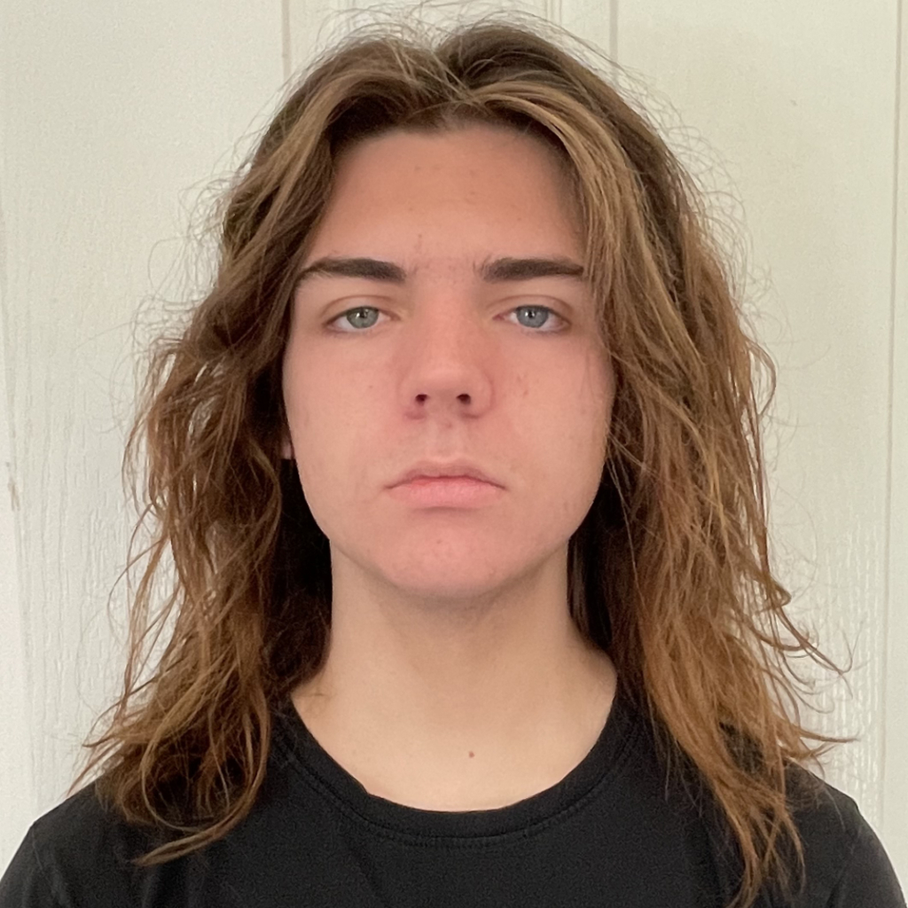
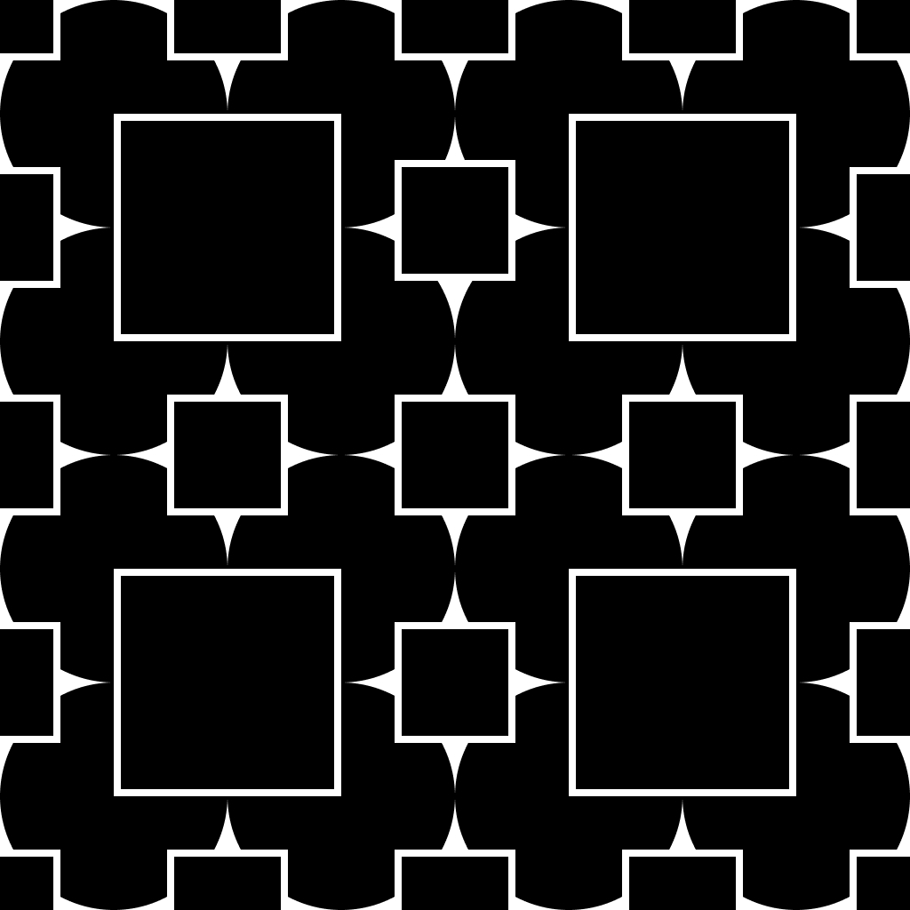
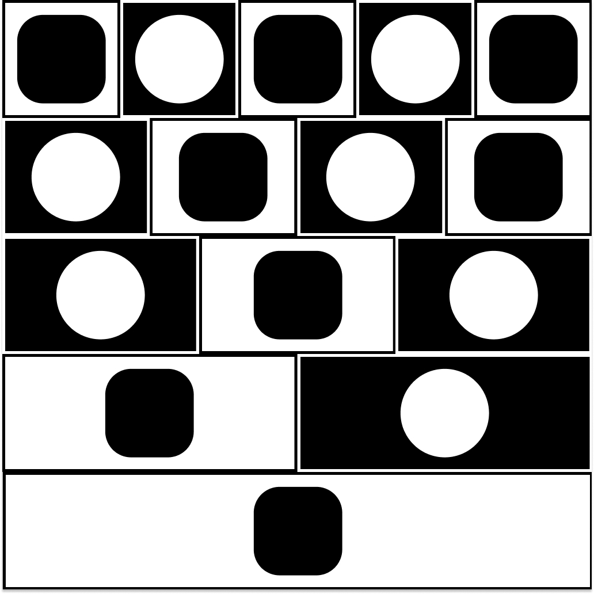
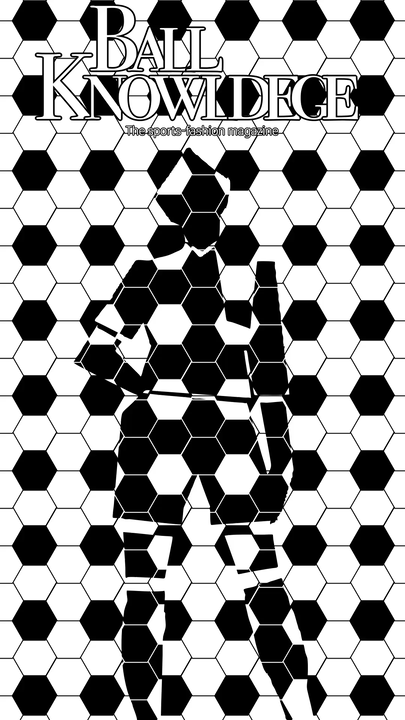

Introduction
Hello, my name is Sam and I am a university student that is currently studying: Creative coding, Graphic & Web design studio, Principles of 3D environment, and Media studio.
This is my website that I have designed and created for my assessment in the Graphic & Web design studio and to display my work from my modules.

Pattern in code
Designed in Figma

Repetition in code
Designed in Figma
Randomisation in code
Designed in Figma

AMP robot 3D model
Created with Maya

AMP robot 3D model
Created with Maya

AMP robot 3D model
Created with Maya

Animated poster
Created with Adobe After Effects
Evaluation
The first assessment for the Graphics and Web Design studio taught me the basics of: prototyping websites, modern programming, graphic compositions, responsive web design, and the usage of generative AI.
The first week introduced the basics of graphic, web design, and the importance of generative AI usage in coursework. I was first taught about generative AI and why its usage is prohibited during assessments. Then, I was tasked to use an online website called “Figma”, a website used to create and design graphic and website prototypes, Figma was used to choose what I believe is good website design and good graphic composition.
The second week taught me to create a website via coding with “Visual Studio Code”, understanding “Git” and how to use and “GitHub”. I was introduced to Git; a “version control system” that easily saves multiple versions of code without confusion locally, I was then taught about GitHub, another version control system that saves uses a cloud-system rather than being saved locally. After understanding Git and GitHub; as well as the differences, I was tasked to complete a coding worksheet in the “HTML” coding language. To complete this task, I used Visual Studio Code/VSC; a program that supports HTML and is used for solely for coding. After completing the coding task, I then uploaded the HTML code to GitHub.
The third week taught me about the “6 Gestalt Principles” graphic compositions; these being: repetition, radial, rhythm, emphasis, space, pattern, and texture. I was then tasked to create three graphic compositions using these principles. In the fourth week I was taught to understand the “layout principles” of website design; these being alignment, hierarchy, grouping, and contrast. As well as how to prototype website compositions. I was then tasked to prototype the website I will create for my assessment using Figma. In the fifth week I was taught about the importance of responsive web design and what components are used to achieve this goal as well as the importance of copyrighted materials and piracy, I was then tasked to update my website prototype in Figma with this new information.
The sixth week taught me more about using HTML, I learned more by completing a HTML worksheet in VSC. In the seventh week I was taught how to use “CSS” in my assessment. CSS is a coding language used for supporting HTML code. I was taught how to use CSS by completing a CSS worksheet in VSC. The eighth week taught me how to use CSS frameworks; I was taught how to use CSS frameworks by completing two CSS coding worksheets in VSC using a framework called “Bootstrap”.
In the ninth week onwards, I was tasked with finishing the assessment by creating my portfolio website using the information I have gathered throughout the module. During this assessment I have gained knowledge on basic programming, responsive website design, and graphic compositions. My strengths were having pre-existing understanding of graphic compositions; my biggest weakness was learning how to code for the first time.